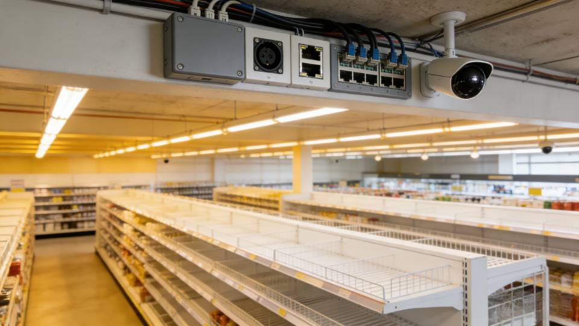

网络拓扑结构
整体网络采用分层设计，设备之间采用冗余链路，保证任意单点故障不影响整体业务。



毕业设计 | 三层网络架构 | 安全隔离 | 高可用部署
本项目针对大型超市日常运营的网络需求，完成一套完整的局域网设计方案。设计目标是满足收银、办公、仓储、监控、无线等多业务场景的稳定运行，同时保证网络安全、可扩展、易维护。
网络采用**核心层-汇聚层-接入层**三层架构，通过VLAN实现业务隔离，通过双机热备提升可靠性，通过防火墙与访问控制实现安全防护，最终形成一套可直接落地实施的超市网络工程方案。
大型超市日常运营包含POS收银、办公OA、仓储管理、视频监控、顾客无线等多业务场景，各业务对网络带宽、延迟、安全性要求不同：
网络需满足：可用性≥99.99%，核心层带宽≥10Gbps，接入层≥1Gbps，VLAN隔离业务，双机热备保障核心设备不中断。
边界防护、内网隔离、无线加密、数据备份、运维审计五大安全维度，防止数据泄露与非法访问。
核心层：核心路由器+核心交换机，负责全网数据转发与互联；
汇聚层：汇聚交换机，负责接入层数据汇聚与业务隔离；
接入层：接入交换机/无线AP，负责终端接入与PoE供电。
整体网络采用分层设计，设备之间采用冗余链路，保证任意单点故障不影响整体业务。

| VLAN | 区域 | 网段 | 网关 | 说明 |
|---|---|---|---|---|
| 10 | 收银区 | 192.168.10.0/24 | 192.168.10.1 | 高安全 |
| 20 | 办公区 | 192.168.20.0/24 | 192.168.20.1 | 可上网 |
| 30 | 仓储区 | 192.168.30.0/24 | 192.168.30.1 | 业务内网 |
| 40 | 监控区 | 192.168.40.0/24 | 192.168.40.1 | 视频流 |
| 50 | 服务器 | 192.168.50.0/24 | 192.168.50.1 | 核心数据 |
| 60 | 无线AP | 192.168.60.0/24 | 192.168.60.1 | 员工/顾客 |
| 设备类型 | 型号 | 数量 | 用途 |
|---|---|---|---|
| 核心路由器 | Cisco 4321 | 2 | 出口、双机热备 |
| 核心交换机 | 华为S5735 | 2 | 三层交换、万兆 |
| 汇聚交换机 | 华为S5735 | 4 | 区域汇聚 |
| 接入交换机 | 华为S5720 | 12 | 终端接入、PoE |
| 防火墙 | Hillstone G30 | 2 | 安全策略 |
| 无线AP | 华为AP7060 | 8 | Wi-Fi覆盖 |
双防火墙热备，ACL限流，IPS防攻击，关闭高危端口。
VLAN隔离，802.1X认证，IP+MAC绑定，DHCP Snooping。
WPA3加密，双SSID，顾客网络完全隔离。
数据库加密，自动备份，日志审计。
本设计完成了大型超市局域网的完整规划，包括需求分析、拓扑设计、IP规划、设备选型、安全策略、测试方案等全部内容。
方案满足超市高可靠、高安全、易扩展的核心需求，可直接用于实际工程部署，也符合毕业设计的专业要求。